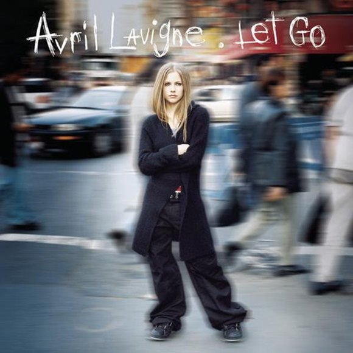

스케이트보드의 역사
스케이트보드의 시초는 1940년대에 캘리포니아의 서퍼들이 파도가 없는 날도 보드를 즐기고 싶은 마음에 서핑보드에 롤러스케이트 바퀴를 달은 것이다. 이후 1976년 Alan "Ollie" Gelfand가 알리를 발명해내면서 스케이트보딩의 모습은 바뀌게 되었다.
다른 많은 종류의 보드들도 그렇지만, 스노보드와 밀접한 관련이 있는 스포츠로, 그랩, 알리 등 스노보드 용어와 기술 중 많은 부분이 스케이트보드에서 나왔다. 스노보더 중 많은 수는 스케이트보드를 즐긴다. 하프파이프도 원래 스케이트보드 독타운에서 비롯된 것이다. 따지고 보면 서핑-스케이트보드-스노보드 순서로 분화된 것이니 기본 용어가 같은 게 많은 건 당연하다.
스케이트보드는 주행과 기술을 포함하는 액션스포츠이다. 스케이트보딩은 예술로서의 취미 활동, 직업, 이동수단으로 여겨진다. 수년동안 전세계의 많은 스케이터 들은 스케이트보딩의 모습을 만들고 영향을 주었다. 2009년 전세계에서 스케이트보딩 시장은 매년 48억의 수익을 내며, 약 1108만명의 활동적인 스케이트보더가 있다고 조사되었다. 2016년에는 도쿄에서 열릴 2020올림픽 종목으로 채택 되었다.
스케이트보드의 종류
스케이트보드를 크게 3가지로 나누면 스탠다드 스케이트보드, 롱보드, 크루져보드가 있다. 보통은 데크의 크기와 모양에 따라서 구분이 되며, 그 기준이 모호한 형태들도 소수 있다. 자세히 들어가면 도심보다 약간 험한 지형에서 타기 위한 마운틴보드 등의 종류도 있고, 바퀴에 모터를 달아서 움직이는 흔히 말하는 전동보드도 심심찮게 볼 수 있으며 서핑과 유사한 느낌을 내기 위해 만들어진 랜드서핑보드도 있다 . 또한 웨이브 보드같이 바퀴가 2개인 것들도 있다.
스케이트보드와 패션

슈프림
스케이트 보드 문화를 지탱하는 브랜드인 만큼 각종 스케이트 보드 관련 장비도 발매하며, 뉴욕의 매장에는 문턱이 없어 스케이트 보드를 탄 채로 그냥 들어올 수 있게 해 두는 등 여전히 보더들의 브랜드다운 모습을 보여주고 있다.
슈프림에서는 매 시즌 그 시즌의 인상적인 디자인을 스티커로 프린트해서 어떤 제품이던 하나당 스티커 하나를 같이 주는 일종의 보너스가 있다. 이는 스케이트 보드 문화를 기반으로 한 업체들에서 공통적으로 발견되는 것으로 당연히 첫째 용도는 보드에 붙여서 장식하는 것이다. 기본 박스 로고는 매 시즌 빠지지 않고 생산되어 가장 만나기 쉬우며, 매장에서 요청시 특정 스티커로 바꿔서 주기도 한다.

팔라스 스케이트보드
팔라스 스케이트보드는 2010년 레프 탄주(Lev Tanju)가 런던에서 런칭한 브랜드이다. 제2의 슈프림이라는 별명에 걸맞게 강렬한 로고와 독특한 디자인으로 상당히 많은 인기를 가지고있는 스트릿 브랜드이다. 슈프림이 미국서부의 감성이라면 팔라스는 영국 런던의 축구 감성을 표현한다. 실제로 팔라스 옷들을 보면 축구 유니폼 스타일로 많이 나온것을 알 수있다.
베이프
미국의 스트릿 브랜드의 힙합, 펑크, 스케이트보드 문화를 하라주쿠 스타일인 듯 하면서도 본인만의 스타일로 독특하게 녹여낸 베이프는 일본 현지는 물론이고 북미, 유럽에서도 광범위한 인기를 얻고 있다. 칸예 웨스트와 퍼렐 윌리엄스가 즐겨 찾던 브랜드이기도 했으며, 특히 퍼렐은 설립자인 니고와 절친한 사이로 아예 BBC라는 합작 의류 브랜드를 세우기도 했다.에이셉 라키도 베이프를 굉장히 좋아하며 Purple Swag이나 Peso 같은 유명한 뮤직비디오 뿐만 아니라 그외 많은 라키의 뮤직비디오에서 베이프를 자주입고 나온다.

퍼킹어썸
퍼킹 어썸(Fucking Awesome)은 스케이트 보드 브랜드 슈프림모델로 유명한 프로 스케이터 제이슨 딜(Jason Dill)이 직접 디렉터 하고있는 브랜드다. 현역으로 활동하는 모델대신 노숙자를 필두로 한시즌 룩북를 선보인 적도 있었고 유명 스케이터 테이션 존스(Tyshawn Jones), 케빈 브래들리(Kevin Bradley), 사가 엘세서(Sage Elsesser) 등 어렸을적 얼굴을 그대로 옷에 프린팅을 하여 메인 제품으로 내놓아 불티나게 판매를 했다. 또한 악명높은 포토그래퍼 Mike Piscitelle도 참여해 브랜드의 독보적인 아이덴티티를 보여줬으며 돈 보다 브랜드의 멋을 중요시 했다. 퍼킹 어썸은 현재 스케이트 씬(scene) 획을 긋고있는 중이다.
반스와 스케이트보드
스케이트 보더들의 반스 사랑은 1970년대에 접어들며 점차 고조됐다. 질긴 캔버스와 두꺼운 쿠션, 와플 모양의 바닥과 고무 테두리가 인상적인 반스는 튼튼한 내구성과 쫀쫀한 밑창에 매력을 느낀 보더들에게 많은 사랑을 받을 수 있었다.
많은 스케이트 보더들이 반스의 신발을 신고 보드를 타기 시작했으며, 그들의 피드백을 받아 신발을 개선해 나가며 현재의 반스가 탄생할 수 있었다. 그리고 곧 스케이트 보드 콘테스트에는 참가자들의 다수가 반스의 어센틱을 신고 나오게 된다. 그들에게는 어센틱이라는 반스의 제품이 보드 만큼이나 상징적으로 자리잡은 것이다. 이러한 반스의 스케이트 보드 문화는 최근에도 계속 자리하고 있다. 반스의 슬로건인 'OFF THE WALL' 역시 스케이트 보드와 밀접한 연관이 있다.
1960년대 말 미국의 베트남전쟁의 후유증으로 인해 미국에서는 사회적인 불만이 가득한 상태였고, 이에 10대들은 직접 거리에 나와 베트남 전쟁 반대 운동을 펼치며 그들만의 반항 문화를 만들어갔다. 히피 문화와 뒷골목 문화 같은 것에 정서에 기대게 된 것이다.
이때 반항 문화를 대표하는 것 중 하나가 스케이트 보드였다. 보드를 잘 타는 이들을 보게 될 경우 다른 이들은 "Did you see that guy get off the wall!"이라며 탄성을 질렀고, 이러한 감탄사는 곧 보더들의 상징이 되기도 했다. 이후 10대들의 우상이었던 스케이트 보더 스테이시 페럴타(Stacy Peralta)를 모델로 기용하며 완벽한 스케이트 보드 슈즈의 대명사로 자리잡은 것이다.
스케이트 필르머
스케이터들에게 비디오 영상은 래퍼들의 믹스테잎 같은 개념이다. 자신의 플레이 영상을 공유하고 간직하는건 스케이터들에게 매우 중요한 요소 중 하나이다. 스파이크 존즈는 보더들이 배포하는 스케이트보드 필름을 찍다가 감독 데뷔한 사례다.
스케이트보드 매거진
https://www.thrashermagazine.com/
https://www.freeskatemag.com/
https://skateboarding.transworld.net/
https://greyskatemag.com/
https://juicemagazine.com/
https://kingskatemag.com/
스케이트보드와 음악
스케이트보더들이 배포하는 비디오나 매거진들을 살펴본다면 펑크나 하드코어 메탈 음악들과 관계가 깊다는 사실을 알 수 있다. 실제로 언더그라운드에서 발행되는 스케이트보드 관련 잡지들은 거의 모두 펑크나 하드코어 씬을 통해 유통된다. 오죽했으면 스케이트펑크 라는 펑크 음악 장르가 따로 존재한다.

Sk8er Boi
2002년에 발매한 1집 Let Go에 수록된 곡이다. 에이브릴라빈이 17살에 낸 첫 앨범 Let Go는 UK차트 1위 빌보드 2위에다 전세계적으로 1700만 장 이상의 판매고를 올리는 등 엄청난 상업적 성공을 거두며 전세계적으로 신드롬을 일으켰고, 2000년대에 가장 많이 판매 된 앨범 중 21위를 차지했으며, 2000년대의 최고 앨범 4위를 차지했다. 싱글 중 데뷔곡 Complicated는 2000년대 최고 인기곡, 발라드 싱글 I'm with You는 2000년대 최고 명곡 중 하나로 꼽히며, 펑크 기타 사운드를 섞은 팝송 싱글 Sk8er Boi는 지금까지도 모르는 사람이 없을 정도다.
스케이트보드와 영화
영화 <미드90> , 2018
누군가의 인생을 바꿀 우리 모두의 끝내주는 VHS TAPE
1990년대, LA. 스티비의 여름은 처음으로 뜨겁고 자유롭다.
그에게는 넘어져도 좋은 스케이트보드, 그리고 함께 일어서는 나쁜 친구들이 있다.
배우 출신으로 잘 알려져 있는 조나 힐 감독은 자신의 첫 장편영화를 통해 1990년대 로스앤젤레스 10대 소년을 따라간다. 열세 살 스티비는 집안에서 제대로 돌보아 주는 이가 없다. 그런데, 우연히 스케이트장에서 만난 새로운 친구들은 자신을 놀리기도 하지만, 애정을 갖고 대해준다. 스티비는 점점 이들과 어울리면서 성인 흉내를 내기도 하다. 평범한 듯 보이지만 특별한 성장과정을 조나 힐은 인종이 어울리고, 취향이 뒤섞이면서 어떻게 존중받게 되는가를 설득력 있게 묘사해 내고 있다. (2019년 제20회 전주국제영화제/이상용)
국내 스케이트보드
우리나라에서는 정말 매니악한 스포츠로 인식된다. 1980년대 말부터 한국에서도 유행을 타기 시작할 것처럼 보였으나, 우리나라 특성상 길이 평평하지 않고 울퉁불퉁한 아스팔트가 많아 때문에 주행이 힘들다는 등의 이유로(덤으로 소리도 시끄럽다) 크게 발전하지 못한 반짝 유행에 그쳤다. 그 후로는 새로 도입된 스노보드에 밀려, 보드스포츠 하면 스노보드를 일반적으로 더 떠올리게 되었다. 2015년 봄 부터 SNS등을 통해 롱보드가 널리 알려지게 되면서(롱보드여신) 최근에는 롱보드 인구가 부쩍 늘었다.
스케이트 보드 타기에 적합한 장소(평평한 바닥,넓은 광장 등)를 보더들 사이에선 스팟(SPOT) 이라고 부르는데 우리나라에선 유명한 스팟이 보라매공원, 동대문 훈련원 공원, 뚝섬 스케이트파크 등이 있다.최근 롱보더들이 늘어나면서 롱보드 스팟도 속속 늘어나고 있다, 서울에서 유명한 롱보드 스팟으로는 반포 한강공원(주차장으로 용도 전환으로 사용 힘듬), 올림픽공원 (한국 인라인 스케이트 붐의 발상지이기도 하다), 광진교, 여의나루, 오금교, 한강공원 망원지구, 북서울 꿈의 숲 등 셀 수 없이 많다. 해당 스팟을 거점으로 활동하는 크루들도 존재하며, 관심이 있다면 롱보드코리아 카페를 들어가보자. 수도권 이외의 다른 지역의 스팟들로 대구에는 대표적으로 두류공원이 가장 넓어서 사람들이 많이 모이며 국채보상운동기념 공원에도 제법 모이는 편이다. 부산에서는 사직운동장이 수십년 전부터 전국적으로 유명한 스케이트보드 스팟이며,르네시떼, 남항엑스스포츠게임장과 송상현광장, 영화의 전당에서 많이 모인다.